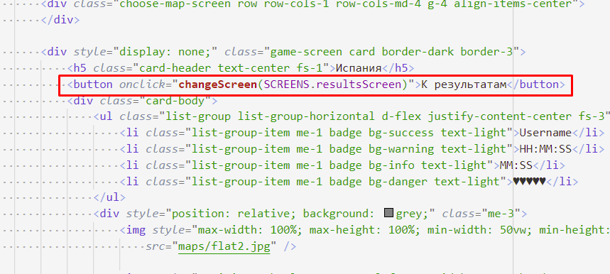
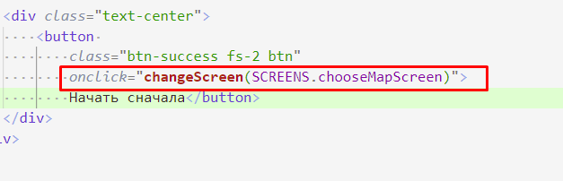

202202181637 Переключение с Экрана Игры на Экран Результатов, c Экрана Результатов на Экран Выбора Карты
На самом деле, мы можем воспользоваться тем же трюком, и просто вызвать нашу функцию в HTML.
- Для ухода с экрана Игры на результаты придется вписать кнопку для тестирования:

- А на экране результатов, эта кнопка уже есть:

- Ура! Должно работать. Не забываем перепроверить. И переходим к работе над Модальным окном входа.